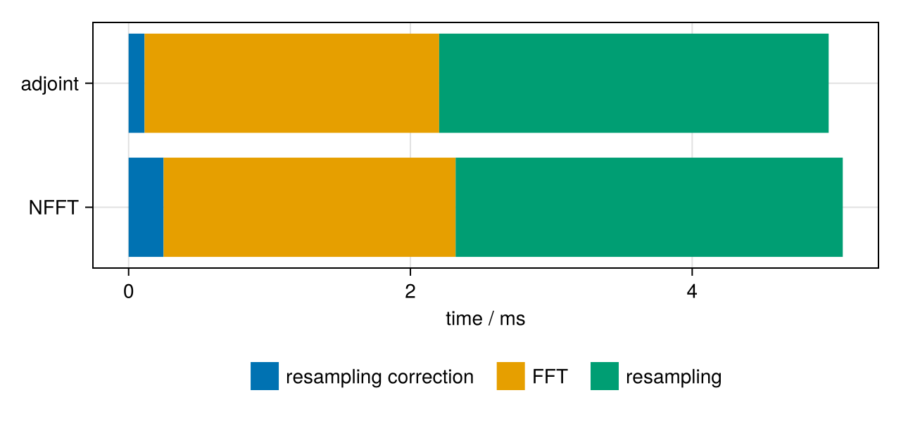

Stages of the NFFT
This guide shows how to call the three stages of the NFFT one by one: resampling correction, FFT and resampling (see Mathematical Background). The stage interface works on the oversampled array of size oversampled_size(p). It is useful for methods that operate on the oversampled grid, such as Toeplitz embeddings, for teaching, and for profiling.
using NFFT, LinearAlgebra, Random, CairoMakie
Random.seed!(1)
N = (256, 256)
k = rand(2, 100_000) .- 0.5
p = plan_nfft(k, N)
Ñ = oversampled_size(p)(432, 432)Run the direct NFFT stage by stage
f = randn(ComplexF64, N)
g = zeros(ComplexF64, Ñ)
fHat = zeros(ComplexF64, size(k, 2))
resampling_correction!(p, f, g) # D: divide by φ̂, zero-pad
oversampled_fft!(p, g) # F
resampling!(p, g, fHat) # B: evaluate at the nodes
fHat ≈ p * ftrueRun the adjoint stage by stage
The adjoint runs the adjoint stages in reverse order:
back = zeros(ComplexF64, N)
resampling_adjoint!(p, fHat, g) # Bᴴ: add node values to the grid
oversampled_bfft!(p, g) # Fᴴ
resampling_correction_adjoint!(p, g, back) # Dᴴ: crop, divide by φ̂
back ≈ adjoint(p) * fHattrueFind out where the time goes
Timing the stages shows which part dominates. The FFT stages of this interface transform the full oversampled array, while p * f skips the zero padding, so the sum is a bit larger than a complete transform.
tmin(op) = (op(); minimum(@elapsed(op()) for _ in 1:5))
t = [tmin(() -> resampling_correction!(p, f, g)),
tmin(() -> oversampled_fft!(p, g)),
tmin(() -> resampling!(p, g, fHat)),
tmin(() -> resampling_adjoint!(p, fHat, g)),
tmin(() -> oversampled_bfft!(p, g)),
tmin(() -> resampling_correction_adjoint!(p, g, back))]
fig = Figure(size=(640, 300))
ax = Axis(fig[1, 1]; xlabel="time / ms", yticks=(1:2, ["NFFT", "adjoint"]))
colors = Makie.wong_colors()
names = ["resampling correction", "FFT", "resampling"]
for (row, idx) in ((1, 1:3), (2, [6, 5, 4]))
left = 0.0
for (c, i) in enumerate(idx)
barplot!(ax, [row], [1e3t[i]]; direction=:x, offset=left, fillto=left, color=colors[c])
left += 1e3t[i]
end
end
Legend(fig[2, 1], [PolyElement(color=colors[c]) for c in 1:3], names;
orientation=:horizontal, framevisible=false)
fig
The stage interface needs a plan without batch dimensions (dims covering all dimensions). NFCT and NFST plans have it as well: their oversampled array holds the stored grid points, and the FFT stages are the DCT-I/DST-I and its transpose.
Real values at the nodes
For an RNFFT plan the oversampled array is real, and the resampling correction writes the complex half spectrum of size spectrum_size(p). The FFT stages map one into the other and therefore only exist out of place: oversampled_fft!(p, ĝ, g) and oversampled_bfft!(p, g, ĝ). The other plans accept this form as well.
pr = plan_rnfft(k, N)
h = randn(ComplexF64, size_in(pr))
ĝ = zeros(ComplexF64, spectrum_size(pr))
gr = zeros(oversampled_size(pr))
y = zeros(size(k, 2))
resampling_correction!(pr, h, ĝ)
oversampled_fft!(pr, ĝ, gr)
resampling!(pr, gr, y)
y ≈ pr * htrueThe resampling as a matrix
For analysis and teaching, sparse(p) (with using SparseArrays) returns the resampling stage as a sparse matrix $\bm{B}$ with $W^D$ window weights per node; the resampling is $\hat{\bm f} = \bm{B}\,\mathrm{vec}(\bm g)$ and its adjoint $\bm{B}^{\mathsf H}$. The transforms themselves never build it.
using SparseArrays
B = sparse(p)
size(B), nnz(B), B * vec(g) ≈ resampling!(p, g, similar(fHat))((100000, 186624), 10000000, true)This page was generated using Literate.jl.